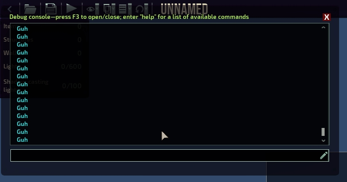
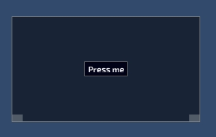

It consists of 3 parts:
Components
They are just passive containers with props
They can have Parent, Children and can be assemblied in a tree like structure
They don't do anything by themselves, their drawing and positioning is orchestrated by CUIMainComponent
Layouts
Every component has attached layout, layouts have logic for positioning children of the component
Main Component
It's a regular component that attaches its draw and update methods to game life cycle methods and instead of drawing and updating itself it's orchestrating draw and update of its children
You don't have to create it, CUI will create one and setup it on initialization
Note: there are now 2 maincomponents: CUI.Main is located under vanilla GUI, and CUI.TopMain is located above vanilla GUI
Small Example
CUIFrame frame = new CUIFrame()
{
Relative = new CUINullRect(w: 0.2f, h: 0.2f),
Anchor = CUIAnchor.Center,
};
frame["guh button"] = new CUIButton("Press me")
{
Anchor = CUIAnchor.Center,
AddOnMouseDown = (e) => CUI.Log("Guh"),
};
CUI.Main.Append(frame);
Result:
 
More examples
I'm too lazy to make more examples
But you can use my tests from CrabUITest as examples
Generated by